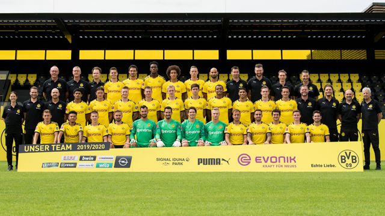

Borussia Dortmund
Borussia Dortmund
Borussia Dortmund
Ballspielverein Borussia 09 Dortmund e.V., Borussia Dortmund – niemiecki klub sportowy z siedzibą w Dortmundzie, w którym główną rolę odgrywa sekcja piłki nożnej. Borussia była jednym z klubów-założycieli Bundesligi i jest jednym z najbardziej utytułowanych w Niemczech – na swoim koncie ma osiem tytułów mistrzowskich, cztery puchary Niemiec, pięć Superpucharów Niemiec, Puchar Zdobywców Pucharów z 1966, a także Ligę Mistrzów z 1997 oraz Puchar Interkontynentalny z tego samego roku. Klub był jednym z założycieli nieistniejącej od 2008 roku grupy G-14 zrzeszającej największe kluby Europy.
Skład Borussii Dortmund
- Bramkarze:
- Roman Bürki
- Marwin Hitz
- Luca Unbehaun
- Eric Oelschlägel
- Obrońcy:
- Dan-Axel Zagadou
- Mats Hummels
- Manuel Akanji
- Leonardo Balerdi
- Nico Schulz
- Marcel Schmelzer
- Achraf Hakimi
- Lukasz Piszczek
- Mateu Morey
- Pomocnicy:
- Emre Can
- Axel Witsel
- Tobias Raschl
- Julian Brandt
- Thomas Delaney
- Mahmoud Dahoud
- Raphaël Guerreiro
- Giovanni Reyna
- Mario Götze
- Immanuel Pherai
- Napastnicy:
- Thorgan Hazard
- Jadon Sancho
- Marco Reus (C)
- Erling Haaland

Osiągniecia klubu
| Rozgrywki | Razy | Sezony |
| Puchar Interkontynentalny | 1 | 1997 |
| Liga Mistrzów | 1 | 1997 |
| Mistrzostwo Niemiec | 8 | 1956, 1957, 1963, 1995, 1996, 2002, 2011, 2012 |
| Puchar Niemiec | 4 | 1965, 1989, 2012, 2017 |
| Superpuchar Niemiec | 6 | 1989, 1995, 1996, 2013, 2014, 2019 |